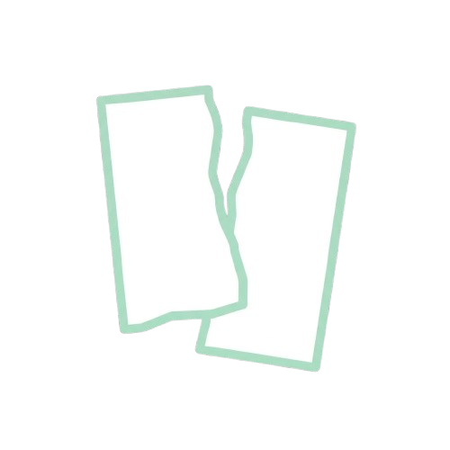

Dicas de estudo:

Prática distribuída (Espaçamento)
Dividir o estudo em várias sessões ao longo do tempo (em vez de acumular tudo na véspera), com intervalos baseados em 10% a 20% do período de retenção desejado.
Técnica Feynman
Consiste em explicar o assunto com palavras simples, como se ensinasse a alguém ou a si mesmo sem olhar o material. Onde houver dificuldade ou travamento, você identifica falhas na compreensão e volta ao conteúdo para corrigir.
Técnica Pomodoro
Consiste em estudar com foco total por 25 minutos e fazer uma pausa curta de 5 minutos. A cada quatro ciclos, faça um descanso maior de 15 a 30 minutos para manter a concentração.
Vestibulares para prestar e informações adicionais
ENEM (Exame Nacional do Ensino Médio)
É a principal porta de entrada para universidades federais (como UFSCar e UNIFESP) via SiSU, além de garantir bolsas pelo Prouni e financiamento pelo Fies.
COMVEST (Unicamp)
É a principal porta de entrada para universidades federais (como UFSCar e UNIFESP) via SiSU, além de garantir bolsas pelo Prouni e financiamento pelo Fies.
FUVEST (USP)
O vestibular mais tradicional do país, com cobrança aprofundada de conteúdo e lista própria de leituras obrigatórias.